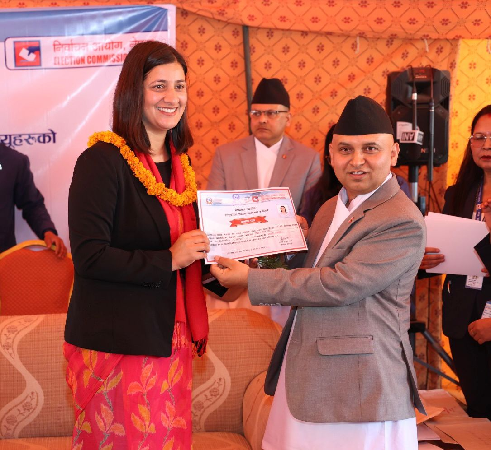
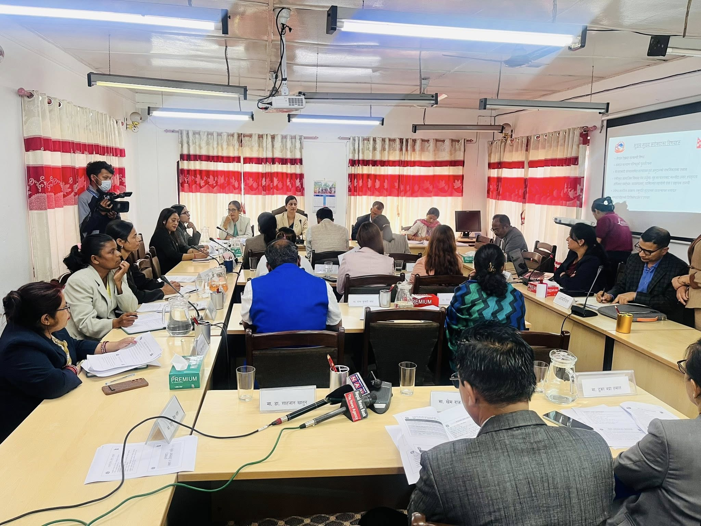
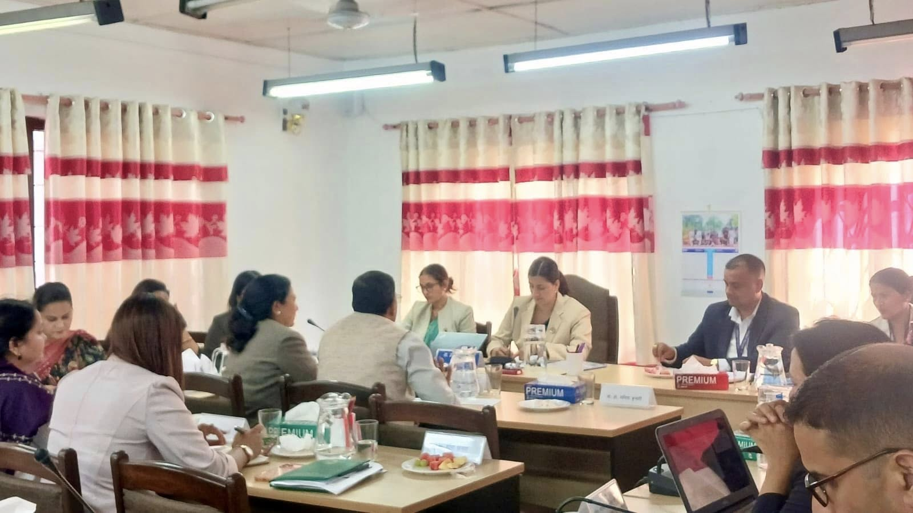
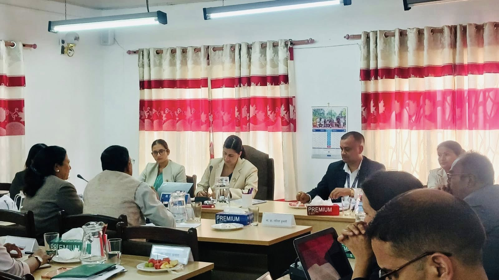
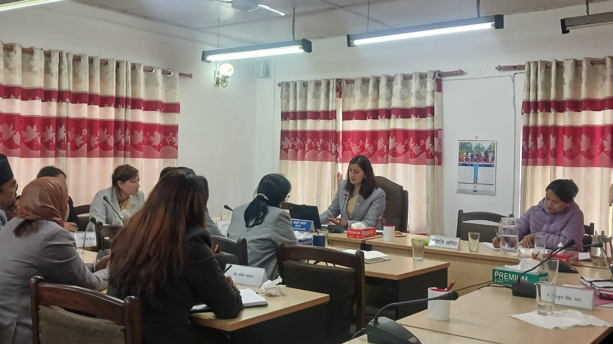
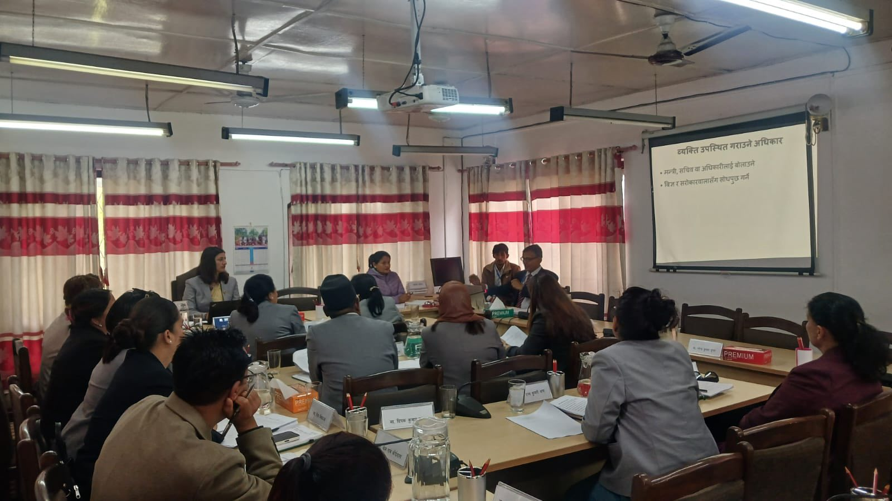
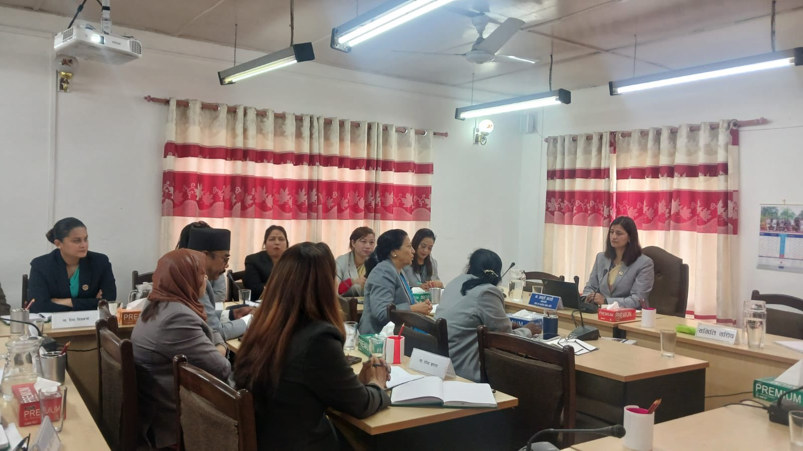
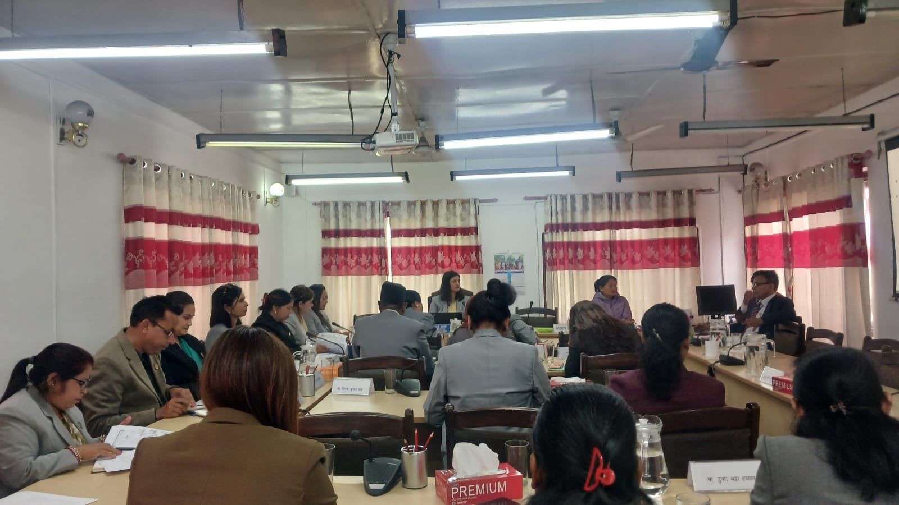
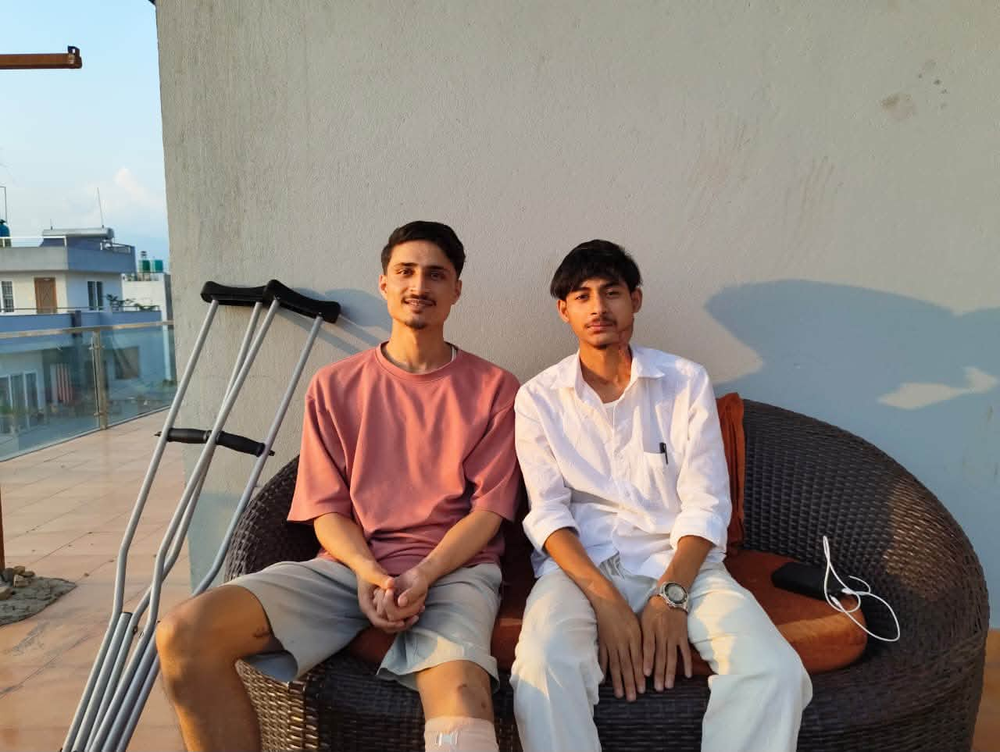
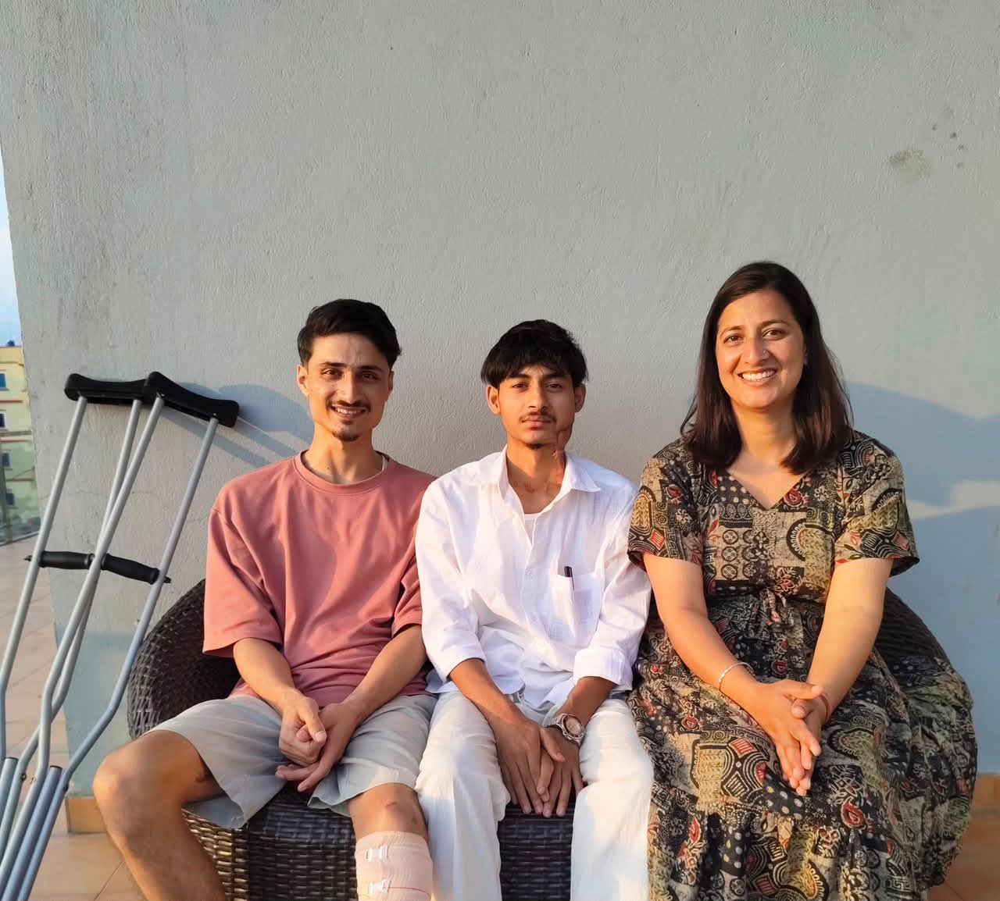

Age

Public Secretariat
Aakriti Awasthi Secretariat आकृती अवस्थी सचिवालय
Member of Parliament - RSP. Chairperson, Women and Social Affairs Committee. A simple public space for updates, documents, contact, and community information.
Election
Party
Public base
About
Aakriti Awasthi
Member of Parliament, Rastriya Swatantra Party
Aakriti Awasthi is a 27-year-old Member of Parliament from the Rastriya Swatantra Party, selected through the proportional representation system. With public roots in Amargadhi, Dadeldhura, she represents a young generation of public leadership focused on accountable, accessible, and citizen-centered parliamentary work.
An accomplished professional and political leader, she specializes in disaster risk reduction (DRR), women empowerment, youth engagement, climate-smart agriculture, and regional water governance. She brings strong experience in project planning, multi-stakeholder coordination, budget management, and partnership-building between local governments, civil society, and cross-border partners. As an advocate for marginalized groups, she works to integrate Gender Equality, Disability, and Social Inclusion (GEDSI) frameworks into public policy. She is also a proud representative for Gen-Z Ghaite (injured) families, strongly advocating for the rights, medical care, and employment needs of wounded youth activists. Combining academic knowledge with real field experience, she is committed to driving the Gen-Z Revolution, empowering women and youth, and bringing forward the urgent needs of Sudurpaschim and all of Nepal.
Name
Aakriti Awasthi
Age
27 years
Election
Proportional representation
Party
Rastriya Swatantra Party
Public base
Amargadhi, Dadeldhura
Committee role
Chairperson, Women and Social Affairs Committee
Education
I.Sc. Agriculture · Bachelor in Social Work · Masters in Development Studies
Committee Introduction
Women and Social Affairs Committee, explained simply.
This section helps the public understand what the committee is, why it exists, how it works, and which public issues it oversees.
Why parliamentary committees exist
In a democratic system, public power comes from the people and is exercised through elected representatives. Parliamentary committees are formed from Members of Parliament so regular and urgent parliamentary work can move forward more effectively.
These committees make parliamentary work faster and simpler, and help keep the government responsible and accountable to Parliament. Because of this role, committees are often called a mini-parliament.
Basic working rules
- The Chairperson is elected by the committee members from among themselves.
- If the Chairperson has not been elected or is not available, the senior-most member chairs the meeting.
- The Prime Minister is an ex-officio member of all committees, and the related minister is an ex-officio member of the concerned committee.
- A minister cannot become the Chairperson or chair a committee meeting.
- A meeting requires the presence of 51% of the total members, and decisions are made by the majority of members present.
Constitution and House Rules
Article 97 of the Constitution of Nepal and Rule 173 of the House of Representatives Rules, 2083 provide for 10 thematic committees. The Women and Social Affairs Committee is one important thematic committee of the House of Representatives.
How this committee was formed
Rule 172 allows thematic and special committees to support the regular work of the House of Representatives. Under Rule 175, the Speaker may nominate up to 27 members, except ex-officio members, with the consent of the House. The House meeting of Chaitra 27, 2082 formed this committee.
Work Scope
The committee monitors and advises on these bodies and issues
To help make the government accountable to the Federal Parliament, the committee monitors and evaluates government work and gives necessary directions, advice, or recommendations under Rule 173.
- Ministry related to women, children, gender and sexual minorities, and social security
- National Women Commission
- National Dalit Commission
- National Inclusion Commission
- Indigenous Nationalities Commission
- Madhesi Commission
- Tharu Commission
- Muslim Commission
- Social security
- Inclusion, marginalized communities, related rights, interests, subjects, and bodies
Work, Duties and Authority
What the committee can do for public accountability
Under Rule 178 of the House of Representatives Rules, 2083, the committee studies, monitors, questions, recommends, and follows up on matters within its work scope. In simple terms, its responsibilities can be understood like this:
-
1
Bills and reports
Discuss related bills clause by clause and submit reports to Parliament.
-
2
Policy and budget review
Review policies, programs, revenue, spending, and resource use, then recommend practical improvements.
-
3
Government promises
Track commitments made by ministers and monitor whether government reports and recommendations are implemented.
-
4
Law and public property
Check public property protection and whether rules and government actions follow the Constitution and law.
-
5
Public complaints
Hear eligible public complaints connected to the committee's work area.
-
6
Oversight of bodies
Monitor ministries, departments, agencies, and constitutional commissions, and discuss their annual reports.
-
7
Follow-up on directions
Seek progress within 30 days, review reconsideration requests, and report implementation status to the House.
-
8
Assigned work and programs
Carry out tasks assigned by the House and run approved committee programs effectively.
Secretariat Help Desk
How the secretariat can help visitors.
Appointments and Contact
Use this page to reach the secretariat for appointments, messages, phone contact, and official follow-up.
Contact secretariatMeeting Updates
Meeting photos, committee summaries, public notices, and important activity updates are organized here.
View meetingsPublic Messages
Visitors can send concerns, suggestions, documents, or support requests through the contact form below.
Send messageWork Areas
Focused sections for her public work.
Women and Social Affairs
Committee updates, policy discussions, program notes, and citizen concerns related to women and social welfare.
Constituency Support
Local visits, public hearings, appointment schedules, and follow-up data from the secretariat.
Public Communication
Press notes, announcements, photo galleries, speeches, and verified links to social platforms.
Gen-Z Injured and Martyrs' Families
Advocacy in Parliament for Gen-Z Revolution injured youth activists, martyrs' families, medical care, rehabilitation, employment, and dignity.
First Meeting
Women and Social Affairs Committee Meeting
In the presence of the Honorable Minister for Women, Children and Senior Citizens, the Women and Social Affairs Committee held a focused and result-oriented discussion on the Government of Nepal's policy, program, and budget for the upcoming fiscal year. The meeting centered on issues concerning women, children, senior citizens, gender and sexual minorities, and social security. Sincere gratitude is extended to all honorable committee members for their active participation.



Second Meeting
Second Committee Meeting
On Baisakh 25, 2083, the second meeting of the Women and Social Affairs Committee was completed in a cordial environment. Members discussed effective committee performance, accountable roles, good governance promotion, child correction home reform, monitoring of squatter holding centers, crimes and punishment involving foreign nationals, social media regulation, and gender-sensitive budgeting. Heartfelt thanks to all honorable members who helped make the discussion healthy, dignified, and result-oriented, with hope for similarly effective coordination and collaboration in the days ahead.





Updates
Recent activity and notices.
First committee meeting
Policy, budget, and social security issues were discussed with active participation from committee members.
View first meetingSecond committee meeting
Members discussed governance, monitoring, social media regulation, and gender-sensitive budgeting.
View second meetingImportant document
Add links to notices, statements, forms, or downloadable files.
Courage
Their scars tell the story of courage and sacrifice.
A quiet moment of respect for young people whose strength deserves to be seen, heard, and remembered.


Featured Reel
Watch the latest public reel
Gallery
Photo spaces for events and meetings.
Contact
Keep the secretariat reachable.
For appointments, documents, public requests, or committee-related messages, please use the form or direct contact links.